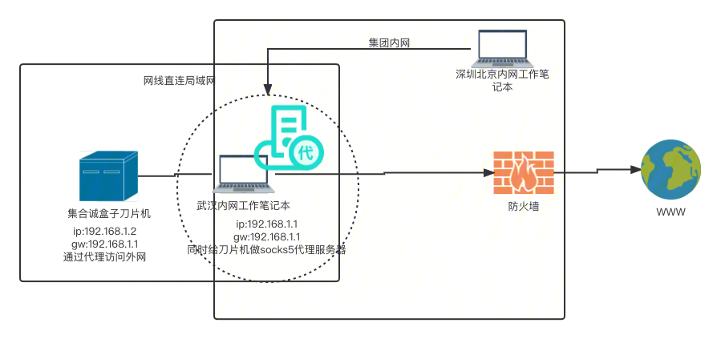
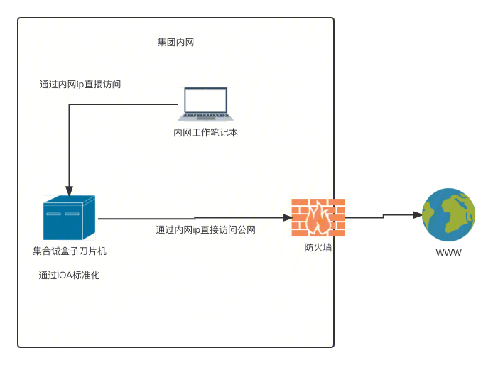

开源在线 Markdown 编辑器
入职以来，并未参与项目方案的宏观研究规划；更多的是项目方案局部执行把控。所以就不做ppt了，罗列主要项目，针对解决的问题精简汇报。
>> mec边缘盒子管控app单机版
集合诚盒子如何接入网络方便异地协作？
尝试过两种方案，期间和团队同事、公司内部网络支持人员做了大量的沟通。
a) 网线直连盒子

b) IOA标准化盒子

单机版应用没有流水线如何持续集成部署？
通过灵活组合git，docker镜像服务push、pull、save、load，ssh远程执行，shell脚本，MakeFile等工具，在快速开发期间提供一个简易的发布协作，提高效率；同时安排在修bug验收期间，研究接入蓝盾标准流水线。
办公室环境无法调试GPS设备如何完成开发？
尝试过两种方案
a) 购买USB延长线，将GPS设备挂到办公室房顶的窗户外面，最后因为USB线缆太长，供电不足，无法达到预期效果
b) 将接近10多斤的盒子抱回家，在家里的阳台暴露接入GPS设备，可以正常收到GPS设备驱动push到应用的经纬度数据
c) GPS定位和手动定位数据同时存储，通过视图提供灵活的经纬度服务
如何快速推广gin-vue-admin web框架的使用和配合啄木鸟代码规范？
a) 对于gin-vue-admin脚手架的API能力全部屏蔽，按需启用和改造
b) 为其他同事快速编写一个路由API的完整example代码，让同事快速适应代码结构
c) 将TMEC公共错误码引入，降低前后端的协作成本
d) 对于不符合啄木鸟规范的代码，通过编译工具、Sed文本替换工具、Python脚本进行重构清理
e) 主动测试调整脚手架对于单机版盒子应用的全流程适配
如何高效集成硬件资源的开源exporter？
支持一致结构的文件指标数据模拟exporter的http数据源，通过对多数据源的Extract-Transform-Load的拆分可组合设计，可适应产品需求的不明确和协商变动。
如何有效的推进功能开发和协作？
对于业务功能开发的一点心得
a) 必须严格录入和存储数据事实，不要主观添加任何计算干预和改变，对于数据事实不连续或者有矛盾的地方，一定要和产品协作人员沟通清楚，这种情况会产生严重问题
b) 基于严谨的数据事实，开发人员要审视产品提供的用户视图是否合理、正交、完整和流畅，视图逻辑的封装尽量保持正交，高度可组合，这样对于产品的协商调整会很轻松，不容易出错
c) 为可能的迭代方向，做一些提前设计和准备
d) 为高可用高并发做一些迭代考虑
e) 对于前端任务压力大，通过本人的前端知识临时分担工作任务，本次完成了docker container的webshell开发
>> 为TMEC权限管理增加用户组
为何对权限增加用户组？和已有的权限是什么关系？如何确保最终效果？
对于现有业务的改造首先要清楚，现状的数据结构和操作场景。
增加用户组级别权限的本质，在于灵活批量配置用户的最终可用权限。
用户的最终可用权限 = 已有的用户权限 U 新增的用户组权限。取并集有两种调整方案：
a) 用户组和用户的权限分开进行增删改，代码比较简洁容易保持正确性，利于迭代，需要页面操作和提示进行适配
b) 用户组和用户的权限增删改进行关联维护，代码比较复杂不利于维护
通过最基本的数据结构掌握业务本质，开发目标更清晰，有利于输出正确结果。
>> 为TMEC接入k8s的水平自动扩缩容
hpa的级别为啥不是docker container？
hpa是针对statefulset deployment这类的负载资源，对pod数量进行伸缩。
无法针对单个pod，进行container的数量伸缩：k8s的最小调度单位是pod，pod其实表示的是一个业务单元（多数情况只有一个container，某些情况是multi-container组成）；同一个pod的container在同一台机器上，在同一台机器上不断增加container，失去了k8s分布式负载调控的意义；multi-container类型pod，进行container的伸缩会使工具环境变得复杂和不稳定；hpa要解决的是业务高峰低谷变化问题，所以业务单元pod来做伸缩。
hpa如何使用metric server?
hpa需要的k8s自带指标由metric server提供，metric server实现了metrics.k8s.io接口；metric server提供hpa对接的metric类型为Resource，一般计算多个pod的metric的平均值，作为伸缩依据。
hpa如何使用custom metric server以及结合普罗米修斯?
hpa需要的自定义指标由prometheus-adapter转换服务提供，prometheus-adapter同样实现了metrics.k8s.io接口，从TMEC已有的prometheus-operator服务获取自定义指标，并做数据转换。
总结：个人的技术面比较广，深入研究过golang、web框架、队列、数据库之类的工具，有较强的业务的把控和开发能力，积极参与团队业务技术建设，期待个人的职业成长。
{kind=link}
{kind=link}